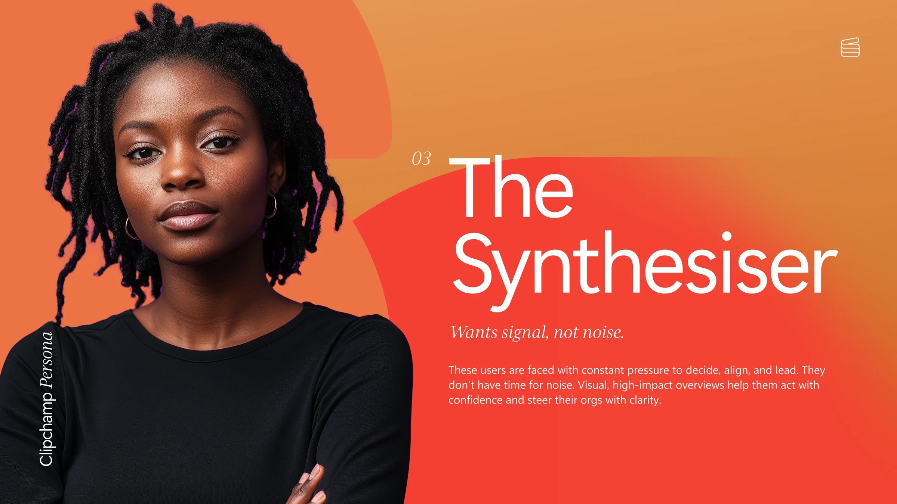
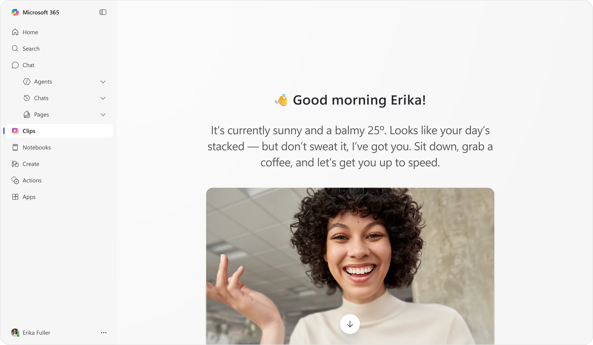
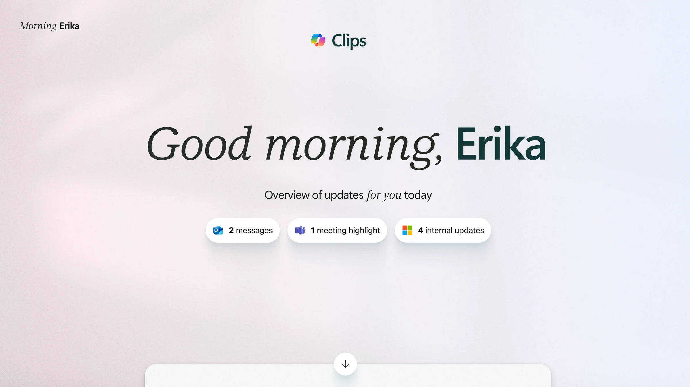
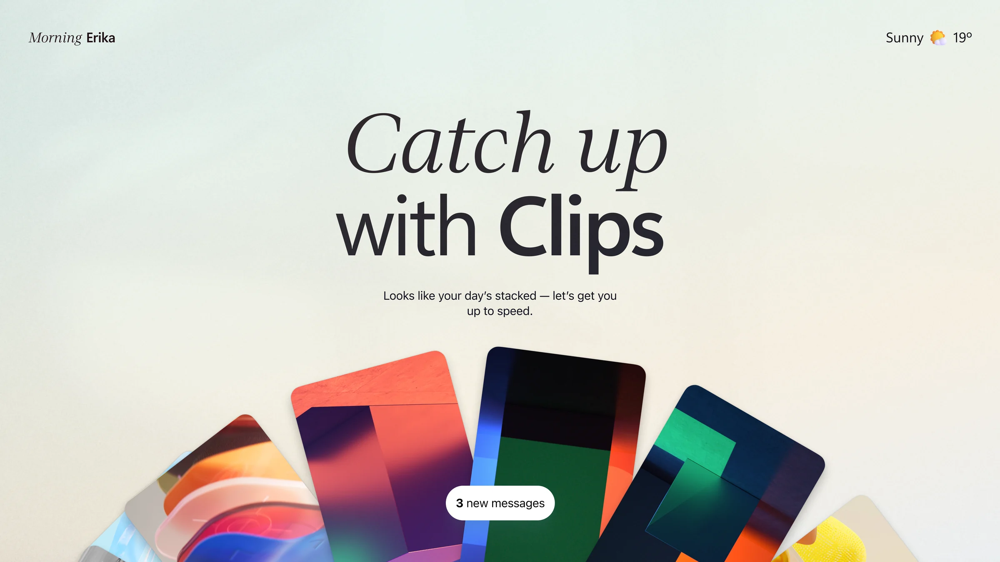
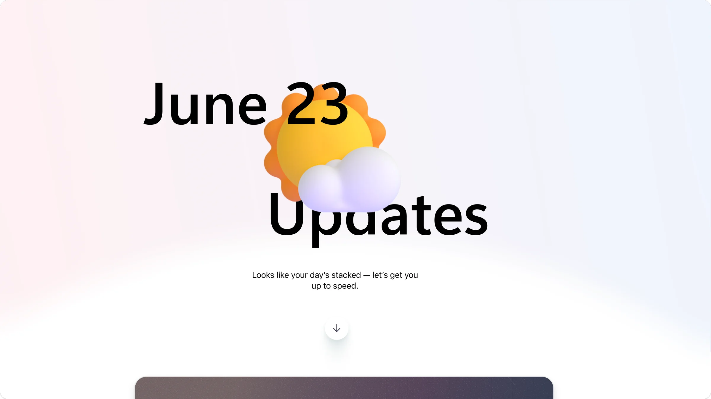
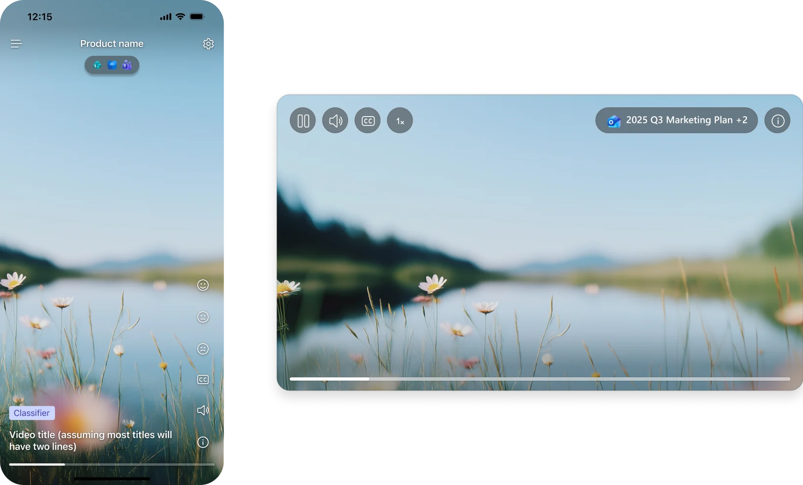

The concept
Working on an unvalidated experimental product was a shift from our usual workflow. With Copilot Clips, we had an idea but needed to know if it was viable for a specific slice of enterprise users. The concept was enterprise content like missed meetings, messages, and emails shown to the user via AI-generated video in a consumer-style feed format where users could scroll through and catch up on their day. Leadership had encouraged this concept to attempt to fulfill our mission of making video a commonplace work communication method.
Finding product-market fit
Using the assumptions/hypotheses framework, we defined what we believed (e.g., “a consumer-style feed will resonate with enterprise users”) and tested those hypotheses using the fastest methods available—vibe-coding, surveys, interviews, lightweight prototypes, and telemetry. This focus on rapid, scrappy weekly experiments helped us derisk our highest-risk assumptions and move through internal Microsoft rings as the product’s shape became clearer.
Squad roles
Although discipline roles were fluid, in general PMs focused on customer interviews about the general product shape and designers focused on specific feature hypotheses and how to validate them with a prototype. We were in constant communication with each other, as the findings from PM interviews would inform which hypotheses moved up or down in priority order to validate. Engineers focused on larger backend hypotheses like performance, storage, and security.
In my role as lead designer, I worked with PM to identify and prioritize hypotheses to test and the plans to validate them using one of two methods:
By code
For hypotheses that needed context of the product, engineering implemented the designs, then I created testing plans to define when validation was met.
By design
For hypotheses that could be validated outside of the product, I created separate user studies that contained a prototype and an accompanying research survey or interview.
Validating via a vibe-coded prototype
For example, I set out to validate 5 hypotheses related to the type of content that performed best in our form factor through a “vibe-coded” AI prototype and an accompanying research survey. The vibe-coded prototype surfaced the design being tested, had a link to a follow-up survey, and collected real-time telemetry (video watch time, thumbs up, and thumbs down) from participants that it sent to a database. After analyzing the 266 sentiment signals and 35 survey responses I was able to prove or disprove 5 hypotheses.
Although the vibe-coded prototype was buggy and took a considerable amount of time, validating these hypotheses on the design side allowed engineers to spend their time exploring other high-risk areas. This prototype was used as an example by leadership to show what designers could do using AI tools, as I was one of the first in the team to vibe-code something that had a practical product use.
Defining our customers
Eventually we had validated or invalidated enough hypotheses that the product shape and the customer base were becoming a bit clearer. Who was resonating with our product? Who wasn’t and why? What was the customer slice we wanted to chase? Personas were then defined based on the results of the prototypes. I contributed to the workshops that defined the persona, but was not the sole person responsible.
Product (PM and Design) aligned on a persona that was called Synthesizers, a fast-moving group of customers that need quick overviews to make confident decisions. Going forward, each of the hypotheses would now be validated or invalidated by members of that specific customer base.

The designs
While the design of the engineered product was quite basic, the group of designers and I were exploring the v2 of the landing page. Our goals with the redesign were to make the feature feel more consumer and foster user confidence that the output wasn’t AI slop and instead an intelligent and informed way to catch up.




While we never got to realize these UI improvements fully as priorities shifted to the quality of the AI-generated videos themselves, I was able to get some minor player UI improvements that I designed implemented for both the web and mobile players.

Measuring progress
After implementing the designs we wanted to ensure we could still measure progress towards our goal of achieving product-market fit. As the lead designer for the team owning the broader experience our content lived within, I was also responsible for assessing overall product success and keeping a holistic view of the end-to-end experience. That meant:
-
Enabling both qualitative and quantitative feedback mechanisms within the product to capture user sentiment.
Feedback mechanism in the product -
Encouraging internal self-hosting by setting up weekly testing challenges and leaderboards.
Internal dashboard with self-hosting leaderboards -
Analyzing feedback across multiple places (surveys, customer input portal) and correlating it with recent product changes to highlight recent successes, improvements, and ideas. I published weekly feedback digests to bring this feedback to the team.
Example of the weekly digests used to communicate successes, improvements, and ideas to various teams
Although I was moved off the project in December 2025 to work on other high priority items, gradually Clips progressed through internal rings and was shown to a select group of customers at the end of April. However, because of model and cost constraints, the team ultimately pivoted away from Copilot Clips and the feature was never shipped.
Reflections
- This was my first project where I used AI to make design prototypes. It's empowering that designers can create lifelike designs with ease!
- I have a better understanding of when to prototype with Figma vs vibe-code. Vibe-code = interaction design, data hookups, responsive pages. Figma = UI details, fewer interactions, and quick thinking.
- Not all the prototypes were successful with AI. Time-box explorations before switching back to traditional methods.